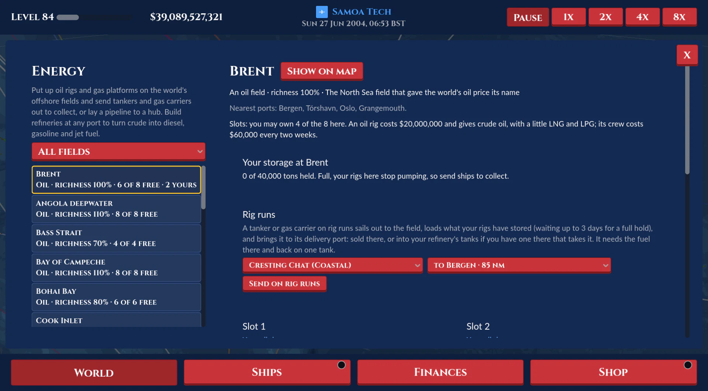

Oil and gas
Added or changed on 15 October 2026

- Tankers companies drill and refine. The page over the map is Energy.
- Goods: Oil is now Crude oil ($165 a ton) and Gas is LNG. New: Diesel $230, Premium gasoline $290, Jet fuel $380 (cheapest at the refining ports: Houston, Rotterdam, Antwerp, Singapore, Nhava Sheva, the Gulf; jet fuel most expensive at Hong Kong, New York, Yokohama and Incheon), LPG $160, Ammonia $260 (cheap at Port of Spain, the Gulf, the Black Sea and the Baltic), Hydrogen $520. The five tankers carry crude, diesel, gasoline and jet fuel (no longer gas).
- Gas carriers, the Tankers type's second line: Gas Coaster (tier 1, 300 tons, $60,000) and Pressure Carrier (tier 2, 2,000 tons, $400,000) carry LPG and ammonia; Midsize Gas Carrier (tier 3, 8,000 tons, $2M), LNG Carrier (tier 4, 60,000 tons, $20M, Medium ports) and Q-Max (tier 5, 120,000 tons, $180M, Large ports) LNG and hydrogen too. Pale hulls with four spherical tank domes, crews in royal blue coveralls and hard hats. The Buffalo carries the three smallest.
- Fields: 22 real offshore fields, 15 oil (Brent, Norwegian Sea, Gulf of Mexico deepwater, Bay of Campeche, Santos pre-salt, Guyana, Grand Banks, Niger Delta, Angola deepwater, Persian Gulf (Safaniya), Mumbai High, Bohai Bay, South China Sea, Bass Strait, Cook Inlet) and 7 gas (Qatar North Field, North West Shelf, Troll, Rovuma Basin, Gulf of Mexico shelf gas, Sakhalin, Leviathan), each with 4 to 10 slots and a richness (0.7 to 1.4). Slots are shared by every company, first come; a company may own half of a field's.
- Rigs and platforms: an oil rig ($20M, from Tankers tier 3) pumps 120,000 tons of crude a year times its field's richness, and a tenth as much again of gas (three quarters LNG, a quarter LPG); a gas platform ($25M, tier 4) 100,000 tons of gas. Crews cost $60,000 every pay period each. What they make goes into the company's storage at the field (20,000 tons a rig, each good its share of it, so gas no one collects never stops the crude); what has no room is lost (the rating notices). Upgrades: More wells ($8M, +30%), Bigger storage ($5M, 60,000 tons), Storm hardening ($6M, half the odds of damage). A slot is sold back for half its rig's cost, or listed for other Tankers companies.
- Storms: a storm over a field (strength over 0.3) shuts its rigs for the day; a strong one (over 0.6) damages one 35% of the time (half that hardened): damaged, it makes half; damaged twice, it stops (a red cross on its deck). Only a tug repairs it: Send a tug (the Energy page) sends the company's nearest free tug with the fuel to get there and back (tugs come with the ports on its routes), for $1.5M a step of damage; it sails out, works 2 days alongside and comes home. Rivals with no tug in reach now and then pay a contractor twice the fee.
- Rig runs: a tanker or gas carrier sent on rig runs (a field's Rig runs card: a ship and a delivery port among the HQ, hubs, refinery ports and the field's nearest ports; it must have the fuel there and back on one tank) gets a route of just its delivery port and shuttles: out to the field, alongside the rigs loading what's stored (the good worth most at its port; a stop's time at least, waiting up to 3 days for a full hold), and back to its port, where its load sells or goes into the company's refinery there. Stop (or any new route) takes it off them once it's back.
- Pipelines (tier 4): from a slot to the company's nearest HQ or hub within 300 nm by sea, $40M plus $100,000 a mile: its output goes straight into the company's store at that port (60,000 tons of room a piped rig), for its ships to load or a refinery there to run on.
- Buildings, at any port in an unlocked region, one of each kind a port a company: Oil refinery ($30M, tier 2: crude to diesel, 95%, 1,500 tons a day), Gas refinery ($45M, tier 3: diesel to premium gasoline, 95%, 1,200 a day), Hydrogen & ammonia plant ($60M, tier 4: LNG to hydrogen at 60% or ammonia at 100%, set at each plant, 800 a day), Jet fuel plant ($70M, tier 5: gasoline to jet fuel, 95%, 1,000 a day). Workers cost $80,000 to $120,000 every pay period. Each has tanks of 20 days of its input and of its output; the company's store at the port holds what they hold, so at one port a refinery's diesel feeds a gas refinery. Upgrades: Bigger tanks (15% of its cost: twice the tanks), More throughput (30%: +25%), Automation (10%: half the wages). Pulled down for half its cost. Only the company's own ships bring input: unloading there, the tanks take what they have room for (no sale, but the delivery's XP all the same) and the rest sells; a ship whose next stop is a refinery port with room for at least half its hold buys that input where it is, ahead of the best trade. Its ships load what the buildings make, free (not the goods a building there takes in), and fill their own fuel free from the diesel in its store at a port, at the port's fuel price against the diesel's.
- Unlocks go by the Tankers tiers, and are listed with the level-up's other unlocks.
- The Tankers rating has a fourth part, Production, a quarter of its stars: rigs and refinery ports against 1 + level / 12 (up to 8), the share of the rigs working, the refineries' use lately, and the share of the output kept.
- Map: each field a teal diamond (for Tankers companies), named from closer in; rigs and platforms on a ring round the field's end, sized in the world like the ships (at least 7 px): a grey deck edged in the owner's colour, a derrick or process modules, a helideck and a flickering flare (out while it's stopped or shut); pipelines dashed to their port in the owner's colour; refineries a little mark of tanks and a flare stack down and right of their port, in the owner's colour. Clicking a field opens it on the Energy page.
- The Energy page: All fields, My rigs, Slots for sale, My refineries. A field: its richness, nearest ports, the company's storage there, its rig runs (and sending another), and a card a slot (Put up, Buy from, the state of the company's own, its output a year, Send a tug, upgrades, Lay a pipeline, List, Sell it off). A port: a card a building (Build; its input and output, rate, tanks, the plant's choice, upgrades, Pull down) and the tanks (each good, its tons against its room, its worth, Sell here). The port popup has a Refineries line with an Energy button; the ship popup says where a rig run goes and that its load came from the rigs. Finances rows: Rigs, refineries and pipelines built; Rigs and refineries sold; Energy costs (crews, workers, repairs); Energy tank sales. AI rivals put up rigs on the field nearest their HQ, send their ships on rig runs, build an oil refinery at their HQ, buy listed slots and send tugs. A tutorial tip ("Our own oil") once the refinery unlocks.
- The hub industry building for crude is now the Oil terminal (it was the Oil refinery), and it and the Gas terminal cover the new grades.